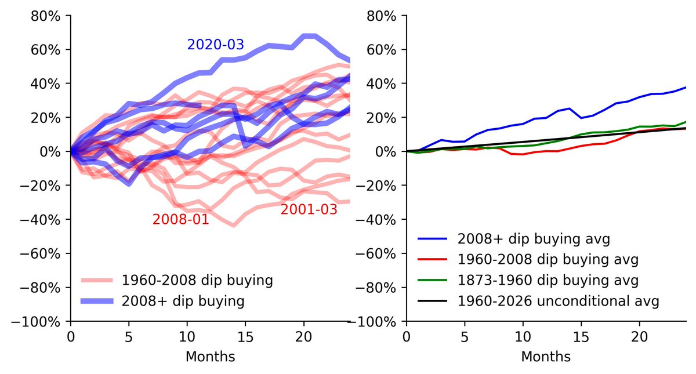
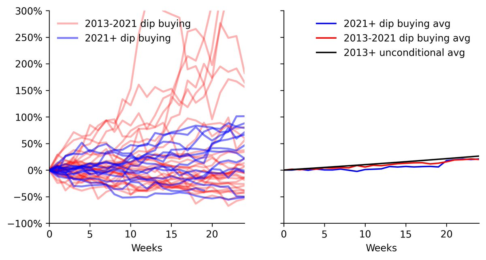
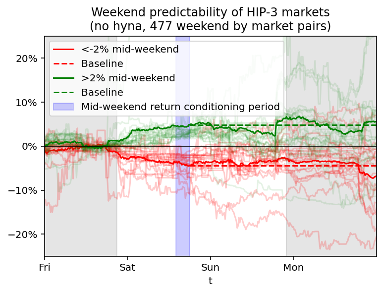
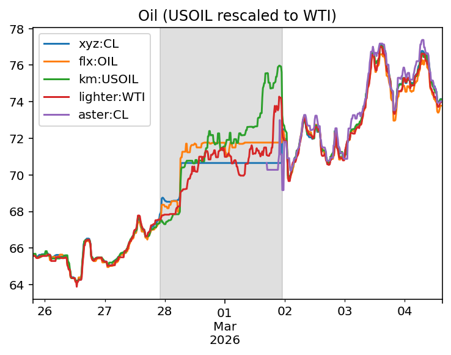

Recent crypto hacks should cause you to reconsider your security strategy. This guide is designed to answer a simple question: what should you do TODAY to be more secure? Maximum security is not for everyone or for every transaction. There are real usability tradeoffs, so I have structured this guide in layers to make them clear. Whatever level of security you choose, it should be a deliberate choice.
Prevent account takeover (highest probability)
Secure your keys (highest dollar value)
Reduce exposure
Prepare for failure
Harden environment
There are plenty of guides on building crypto trading strategies. Many are decent, none resonated with me. Here's my take. Five easy steps.
0. Get your expectations in check
1. Code a low-quality execution bot
2. Build an orchestration system around that execution
3. Add performance measurement system
4. Use performance data to improve steps 1 to 3 until you're not terrible
5. Start trying to actually make money
Let's walk through these.
0. Get your expectations in check
To start with, I don't think automated crypto trading is a path to riches. I'm not even sure it's a particularly good path. I have done very well. With that said,
If you exclude the HL airdrop, I've made about as much as I would if I money kept on my previous path. I do get a lot of flexibility and I got some lottery tickets one of which happened to be a winner; but I also put my own money on the line and got more risk / stress / loneliness.
More generally, I don't think the crypto trading cottage industry has much of a future.
Given that, lets get going with the good stuff. Quoting a movie as I tend to, “If he [my son] really wants a cigarette. I'll buy him his first pack.”
1. Low Quality Execution Engine
Brilliant people have spent decades optimizing trade execution. Luckily, they haven't spent decades on crypto execution because crypto is so new.
Your first step on the path I have set is to build a basic execution engine. This is not a trading strategy. This is not going to make money. This is a placeholder you will use to build out measuring and monitoring capabilities. Once you have those in place, you will improve this into something passable, which you will then use one things that actually CAN make money.
I'd suggest you start with Hyperliquid. Why?
Make sure your bot can, say, take order directions from a REDIS DB and turn that into trades without crashing or losing too much money.
2. Orchestration
Now that you can place orders, you need scaffolding to direct that order placement and understand it. Build out your bot into.
Why bother with all this for a $500 HL account making $10 trades? Because launching a real-money bot without this stuff would be dumb. You're testing in prod with a small account.
3. Measure the Bot
Now instrument everything. Most bot improvements start with a bad fill, a slow cancel, or a risk number that looks wrong. If you cannot measure those, you are guessing.
Big picture, focus on execution first.
Are the prices you get filled at good?
For longer-horizon checks, strip out the move in the coin or BTC on Binance. I want to know what my bot earned, not whether the whole market happened to rally after a fill.
Do not stop at:
Profit = Sell price - Buy price
Break it into the pieces the bot can actually improve:
Profit = Sell price - Price from Binance at sale - Venue adjustment + Medium term change in fair price on Binance due to that coin + Medium term change in fair price on Binance due to broad market moves - (Buy Price - Price on Binance - Venue adjustment)
Track each piece separately. That tells you whether the money came from execution, the venue basis, the coin moving, or BTC dragging everything with it.
When you have an infra here, test the big MMs on HL. They typically make ~0.2-1 bp. If you see them making or losing huge sums, you are wrong.
Do other measures look good?
Tick-to-trade is a proxy metric. It is not the business outcome, but it is precisely measurable and responds quickly when the system improves or degrades. I measure the time from a Binance web socket post to a cancel order because I can measure it extremely accurately.
You will measure it and you will work to shorten it. But always keep in mind that your local deli accepts cash, not ns. You are using tick to trade ONLY because it is easy to measure and allows you to iterate fast.
Implementation tips:
4. Git Gud (or at Least Less Bad)
You won't get good but you can suck less. Once you have measurement and risk checks in place, you should be losing only a handful of basis points per trade. Set your bot to do a thousand trades a day (trade against the stuff that is cheap or expensive vs Binance) and measure what comes out. If your bot is doing dumb stuff, stop it from doing that dumb stuff.
Tune your bot to improve your metrics until you get to a reasonable level. What is reasonable? I'd say your execution costs on small trades executed passively should be less than 2 basis points plus the difference between your fee tier and the top MM fee tier. That should be easy to hit. Keep in mind, you aren't trying to make money (yet), you are just getting to a position where you can move risk around without losing too much money.
5. Start Trying to Actually Make Money
If your are making money after step 4, you screwed up. Revisit step 3.
When you're confident you are in okay shape, then you pick your role. Broadly, I see a few paths to success:
A. Predict Prices Based on Other Venues' Prices
If something is trading at $10 on one venue and $11 on the other, there is a good chance one of those is wrong. The obvious trade is to buy the cheap one and sell the expensive one. Take that logic and scale it.
Your first step should be to download both CCXT and Hummingbot. You want to carefully note every venue they support. Then you should not only DELETE both CCXT and Hummingbot, you should avoid EVERY SINGLE VENUE they support. If a venue is supported there, don't bother, you won't make money. No old venues.
Why not? Well, for starters I'm there and even worse maybe Wintermute or goblin or loris or someone else better than me is there. I've been running that bot for years, I've tuned it, I've worked out the API quirks, it will be hard for you to compete. But even if your bot is BETTER than mine, you still won't win. Why? I'm willing to run my bots for basically zero profit. Even if I'm not making money today, keeping them going keeps my optionality, supports a platform I have a bunch of points on (or relationship with the team etc.), and gives me the ability to build up exposures I like or hedge risk from another venue. Even if you are a better coder, you can't compete with that.
So you go to NEW PLACES. The API may be broken, there isn't that much volume, and you are slightly worried you will lose all your money. Those are bad, obviously, but the pros aren't there and even if they are entering, both you and the pros are starting from square one.
Beyond the competition aspect, crypto is a game of lottery tickets. Old venues are not winning tickets. New venues may well be. I won with Hyperliquid, I lost with a DOZEN other venues. If you want to win, you need to be going to places you CAN win.
On that new venue, you will absorb risk. Your goal is NOT to make money on every trade - your goal is to get into a position where you would make money if you perfectly hedged every trade on Binance at no cost. You don't HAVE to hedge, this is just a reference. The governing assumption is that if you are trading on some degen den, then they aren't adversely selecting against you and changes in the Binance price are just random noise. So if you get filled for better than Binance mids every day, the times the degens lose will more than balance out the times degens win.
This risk absorption could be high frequency. For that, you likely want to specialize in a few venues, build up good relationships, learn the API quirks. You will optimize for those (few) venues, try to take 30-40% of their orderflow for a decent return.
It could be low frequency, e.g., funding rate arbitrage. For this, you model the paths of funding rates and how much leverage you can safely take. While higher frequency was about depth, this is more about breath - you want to have more opportunities to pick from, so you want to have coverage on many futures venues.
B. Predict Prices Using Prices
A lot of people start with modeling prices using prices. It seems so tempting. You download the download Binance data, backtest, and are amazed at the excellent returns you found.
Unfortunately, you found excellent returns because you screwed up. Rule of thumb: if you think you found a 3 Sharpe ratio trading on Binance using price data, you found it because you screwed up.
I split these returns into alpha and beta. Alpha means the price is wrong. Beta means the price may be fair, but I am being paid to hold an unpleasant risk.
Alpha. The price of LUNC gets thrown out of whack because of hedging done by a weird instrument. The contract specs of a weird venue mean funding is paid based on an idiosyncratic formula, the market maker is dumb and hasn't realized this. A Korean venue posts listing announcements on its site early if you can guess the URLs. These are genuine mispricings, but they are small, temporary, and capacity constrained. Once enough people identify the mechanism, the alpha disappears.
Beta. Momentum, reversal, funding-rate patterns, and shitcoins slowly going to zero are risk premia. These factors are widely known and can support more capital. They persist because the exposure is unpleasant and crypto still lacks enough balance sheet to absorb it.
Price data often identifies the anomaly, but it rarely explains the alpha. I see something unusual, identify the mechanism that forced the price away from fair value, then automate it if the opportunity repeats.
Most technical signals are beta rather than alpha. That is not a criticism: factor exposure can still pay well in crypto. I think ScottPh77711570 gives a solid feel for the action technical analysis returns give. macrocephalopod is an all time great.
If you trade beta, diversify across factors that fail for different reasons. Apparent diversification disappears quickly when everyone with the same exposure tries to unwind at once.
C. Predict Prices using New Data
If you want alphas, you are more likely to find them by looking deeply into the oddities of market structure than you are to find them by running ML models on Binance price data.
The low tech approach here is to just do whatever you did as a degen gambler, but slightly better because you have less slippage using your bot. I do some of this - I type in my target allocation and my bots tilt my trading to move toward that allocation. E.g., I short MSTR and rely on my bot to hedge out the BTC risk.
For me at least, the higher tech approaches often emerged from the lower tech approaches. Whenever you see something weird, you should be thinking - does this weirdness create an opportunity? If so, can I write code that captures this weirdness and trades against it every time it happens.
Again, you want to focus on things that Wintermute ISN'T DOING. Sadly, this means you probably want to focus on things that DO NOT scale. Why? Because if it could scale, someone better than you (are now) is doing it.
Buying Bitcoin on Binance based on a DataBento CME subscription? That isn't going to work.
Buying HL memes to front run TWAPs or large deposits? That might work.
I repeatedly tell people not to start trading, and to quit if they are ahead. Very few people have the skills required to do this well. Trading is not a zero-sum game; once you account for fees, spreads, slippage, and outright scams, it is a negative-sum game.
The ratio of people who actually know what they are doing to people who are effectively doomed is extremely low. I personally make a lot of money trading, but that fact is not especially informative. I have also used all sorts of drugs without developing an addiction. If a teenager outside a liquor store asked me to buy them alcohol, I would not tell them that I never had a problem with opiates and that insulin needles are easy to buy. I would tell them to stay in school.
Even if you do have the skills, trading your own account is usually a bad idea. If you are genuinely good enough to make money trading, you should either be doing something else entirely, or trading other people's money in an environment that allows you to scale, learn, and be challenged by a high-skill peer group. Trenching garbage capital does not count, and neither do most paid trading groups. The kind of trading that makes money in crypto, in particular, is often a dead end.
Most retail traders -- whether in crypto, Robinhood equities, FX, or elsewhere -- look a lot like gambling addicts. In crypto especially:
I am genuinely mystified by the behavior. How can Coinbase charge 2 percent fees and still have enormous volume? Why do people trade on venues like MEXC? Why are they trading at all?
From the outside, it looks less like investing or skill acquisition and more like a mix of entertainment, lottery-ticket thinking, and addiction. For most people, the dominant strategy is not to find a better exchange, a better indicator, or a better strategy. It is simply not to play.
Especially Don't Trade TradFi Options or Structured Products
If there is one category of trading retail should especially avoid, it is traditional finance options and structured products.
Robinhood makes a huge amount of money from options trading. Wealth management firms make a huge amount of money selling options and exotic structures. That fact alone should tell you who is winning. The flip side is simple: you, the buyer, are getting hosed.
At a fundamental level, any edge available to retail traders in TradFi is going to be small. It usually comes from taking on some hard-to-hold risk or trading in a niche market that institutions do not care enough about. If you believe you are routinely finding large, clean edges in listed options as a retail trader, you are wrong and should stop trading.
Option markets are dominated by wide spreads, adverse selection, and professional counterparties. The bid-ask alone is often large enough to swamp any edge a retail trader could plausibly have. Whatever you think you have discovered is almost certainly already priced, and priced aggressively.
Many people believe options reduce risk. They do not reduce risk; they transfer it. When you buy options, you are paying someone else -- usually a hedge fund or a market maker -- to take risk you do not want. As a retail investor, you are not going to win that trade on average.
This is not an argument for covered calls either. Covered calls are just the mirror image: you are selling risk back to the same institutional players, either directly or at prices set by a market maker whose business is trading against much more sophisticated participants. You are still the weak side of the trade.
I am posting this because I see crypto traders -- some of whom I believe actually have alpha -- buying TradFi options. In my view, they are lighting money on fire. There is a reason some surgeons refer to motorcyclists as “organ donors.” That is roughly how many TradFi professionals think about retail options and structured product traders.
One important caveat: this logic applies much less to crypto. Crypto options are often mispriced, sometimes badly. In crypto, strategies that would be a punchline in TradFi can actually work. Python HFT is a good example. The market structure, participants, and level of sophistication are simply very different.
My advice for TradFi options and structured products: do not trade them.
What Is Your Fundamental Edge?
You should understand why you made money (if you did) or at least how you could hope to make money.
If you think you make money through some way that isn't above, that's a bad sign.
More practically, what should a retail trader do if they want to get better?
Benchmark
If you want any hope of winning, you need to identify what works and do more of it. To do that, you need benchmarking. Buying GOONCOIN because you thought it was a great meme and then winning because of an inflation print doesn't mean you have skill – it's just luck. You need to try to figure out whether the decision-making process behind that bet had positive expected value.
Two simple ways to improve this immediately:
Stop using strategies that imply you can predict the broad market
If your P&L depends on repeatedly calling the direction of BTC or the S&P, you probably do not have a trade. Large teams with better data and cheaper execution struggle to do this slightly better than chance. Do not build your little account around the assumption that you can do it reliably.
Stop obsessing over cost basis
Whether a position is good or bad has nothing to do with what you paid for it or how much you've already lost. Cost basis is sunk. It is irrelevant.
People hate realizing losses, so they let losers grow. Then they blow up.
I trade through companies. The job is boring: keep a trading blowup inside the operating company and avoid paying tax earlier than necessary. A common setup is an operating company owned by a holding company. It only protects you if the paperwork, banking, and money movements are kept clean.
The correct setup depends entirely on where you live and trade. I use ChatGPT to make a checklist and turn vague concerns into concrete questions. Then I pay a local tax lawyer and accountant to answer them. ChatGPT is useful preparation; it is not the person signing the opinion.
Talk to more than one professional. Ask what happens if an exchange fails, the trading company goes negative, you move countries, you take a dividend, or the tax authority audits the structure. If two advisers give different answers, keep digging before moving money.
The realistic win is a defensible structure, some liability separation, and perhaps tax deferral. If an offshore salesperson promises zero tax and no downside, walk away. I want boring documents that survive an audit, not a clever structure that turns a tax bill into a criminal problem.
My exposure to traditional financial markets is built around humility.
The kinds of things I do in crypto mostly exist in TradFi. However, the environment is vastly more competitive. Execution costs overwhelm edge. I can identify overpriced assets, but they often come with 50% borrow fees, poor entry liquidity, and sizing constraints due to borrow risk. I can run statistical arbitrage and… roughly break even after transaction costs.
So what can I actually do? Three broad things.
1) Betas.
Betas are correlations in the datas. Sometimes the correlations are unpleasing, and people don't want to hold them. If you are willing to take on the risk, you can earn a return. This isn't free money, but you are being compensated for the risk you are taking.
Personally, I load my exposure on the following betas:
There are other factors with long track records, but I mostly ignore them:
2) Extremely Rare Alpha.
I take approximately one discretionary TradFi trade per year.
For a trade to exist, I need to understand why the edge exists and why a bottom feeder like me can access it. I know how to build the hedges. I also know that when I trade in TradFi, I'm bringing a butter knife to a gun fight.
I usually have only two reasons to touch a TradFi trade:
3) Hedges.
I hedge every liquid risk I don't have a view on.
Example: in crypto, I hedge market exposure because I have no directional belief about crypto as a whole.
That leaves large USD exposure. I partially convert it to EUR using futures — again because I have no strong USD view.
I'm not sure how actionable this is to. Hedging is extremely cheap and easy for me, but it might be expensive and frustrating if you were trading manually.
tl;dr: In TradFi I don't compete on cleverness -- I play games where participation itself is the edge.
I tested the obvious dip-buying rule on equities and BTC. It performed exceptionally well in recent US equities and much less impressively everywhere else.
The trade idea makes sense: asset prices fall when people are panicking, so you buy them below what they are worth and wait for the rebound. The blue lines show what happened after 2008 when I bought the broad market following a 10% three-month decline. Every entry worked. The red lines run the same rule on data going back to 1960, where the edge is much weaker.
| Buying equity after 10% value declines |
|
 |
Compounded returns make the point more clearly. Dip buying performed exceptionally well recently. Over the longer history, returns were similar to ordinary market participation.
I ran the same rule on weekly Kraken BTC data. Returns after sharp drops were comparable to returns from random entry points in both the newer and older periods.
| Buying BTC after value declines |
|
 |
It's a bit disappointing that dip buying doesn't outperform. It seems only fair that the people with courage in tough times should be rewarded. But dip buying is betting against momentum, and momentum is a powerful force. As they say, more money has been made buying high than catching falling knives.
Bloomberg and other outlets now use weekend crypto perpetuals as a preview of the Monday open. During the Iran conflict, Bloomberg pointed to them directly. Hyperliquid's HIP-3 markets are deep enough to trade a macro view while the traditional venues are shut. Lighter, Extended, and Aster have usable weekend RWA markets too.
| Weekend RWA price moves on Hyperliquid's HIP-3 RWA markets (except HYNA) |
|
 |
I wanted to know whether weekend RWA moves were tradeable noise. In the past, I had looked at IG Group's weekend "Wall Street" trading and was not impressed. Those markets looked like retail traders pushing prices around while getting fleeced by the spread.
The obvious trade was to bet on a reversal when traditional venues reopened: sell weekend RWA prices above the Friday close and buy weekend RWA prices below it.
I grouped markets by whether they were up or down by Saturday night, then checked where they opened once the traditional venues came back. The "weekend up" group is green and the "weekend down" group is red. The faint lines are individual markets, the solid lines are group averages, and the dashed lines extend the mid-weekend level.
If the moves were just retail noise, prices should return toward the Friday close (solid black line). Selling the weekend-up group and buying the weekend-down group would then make money as arbitrageurs and funding pressure pushed prices back after CME markets reopened.
What I found was that the moves mostly survived the reopen. There is plenty of volatility, but by Monday the groups tend to end up near the mid-weekend level (dashed line), not back at the Friday close. This includes every HIP-3 market except HYNA, which trades crypto. Individual HIP-3 markets show much the same pattern, apart from perhaps Ventuals, where the underlying assets are illiquid even during normal hours.
| Weekend oil price around Iran conflict |
|
 |
The sample is still small: these markets are new, there have not been many weekends, and there are not many distinct products. The figure also shows the growing pains as market operators try to support weekend trading without leaving prices open to attackers or fat fingers. There are not enough weekends to treat this as settled, but so far the obvious reversal trade does not work.
My takeaway is simple: weekend RWA moves are not just noise. They mostly hold when traditional venues reopen. When Bloomberg and other commentators use weekend perpetuals as a preview of the open, the prices are useful—but the sample is still too small to call the trade settled.
Many builders end up in a position where they want active liquidity on their platform. They need someone who will quote prices for the thing they've dreamed up, keep inventory, and stand ready to buy and sell. What should they do?
I'm one of the people you may be targeting, so I'll try to give you what attracts me to the platforms. I've been one of the first active liquidity providers for at least a dozen projects.
Given that, **this is what I want**. Note that EVERYTHING on this list is negotiable. But the more costs you put onto me, the more I'm going to demand.
Lower barriers to entry
Provide a Working SDK
Many builders assume pointing to an API spec is enough, but that's a mistake. Figuring out signing by yourself is always a massive pain. Because of that, I am very reluctant to integrate with a platform that lacks a proper SDK.
Making an SDK is a version of dogfooding. If someone on your team can't quickly put together an SDK, how on earth do you expect me to?
In the age of chat GPT, the language of the SDK doesn't really matter. I'd suggest either Python with type hints or TS to hit the widest possible audience.
**Actionable Suggestion:** Post an SDK that covers the basic methods of your protocol.
**Role Model:** I'd put BitMEX as the role model here. BitMEX not only provided an SDK, they provided a basic MM bot. I think that's part of the platform's (past) success.
Copy Existing Structures Where Possible
Anything that isn't your core innovation should be as close to established players as possible.
If I'm quoting on your platform, I'm going to be taking existing stuff (e.g., HL) and making whatever changes are needed. Every deviation from the norm adds a cost. Minimize unnecessary changes.
**Actionable Suggestion:** Follow existing players unless you have a good reason not to.
**Role Model:** Hyperliquid did a good job here - USDT indexes, a similar funding formula to Binacne, and an AWS tokyo location made it easy to port Binance quotes over. Something like Kraken Futures is an anti-role model: 24-hour factor futures with unclear indices quoted in Europe is a nightmare for no good reason.
Consider a Taker Speedbump
Slowing down taker orders by 100ms (e.g., Hyperliquid) makes it a lot easier to set up a market making bot because you do not need to worry about being picked off by sniping bots.
Completely Describe of Cash Flows
If you want me to provide reasonable price quotes, you need to provide an exact and detailed description of the cash flows of the assets being traded.
**Actionable Suggestion:** Take two similar products, review their documentation, and ensure yours covers everything they do. Information buried in Discord chats is not sufficient.
**Role Model:** Skimming through platforms, Hyperliquid's docs are okay. Kraken Futures is poor. Whales Market is horrible.
Make me comfortable I'm not going to lose my money
Convey Trustworthiness
Everyone needs confidence that their funds are safe. Personally, I look for backers I know (VCs and ideally community members), a doxxed team, and a track record.
Specific asks
In order of priority:
Show me I'm going to make money
Show Growth
Everyone wants growth, so this isn't really actionable. But realize that a lot of the integration costs are a one-time cost. If I'm earning that dividend over a long time, it's a much easier sell.
The returns to integration increase as the platform grows. If your growth is stagnant or uncertain, the cost of integration becomes harder to justify.
Provide the information needed to assess profitability
The liquidity provider's profitability is of course the most important thing. I'm not saying much here because I don't want to leak too much alpha to other MM.
My suggestion here is just to provide information easily. Don't tell people to enquire about the MM program on Discord and then reply three days later. Put it in the docs.
EG: If you want better funding rates... make sure you have a funding rate history end point to make life easy for funding arbers. Even better, put together a funding rate comparison page (e.g., https://app.hyperliquid.xyz/fundingComparison).
I've seen a few posts recently about Lighter, the hot zero-fee perpetuals DEX, and its future business model. One post that triggered me (and this essay) argued that good market makers earn 10 basis points per trade—so the platform can just 'charge them' and call it a business model. That logic doesn't hold up. Let's unpack why.
Before anything else: I like Lighter. I've ranked it in the tier just below Binance, Hyperliquid (HL), and Bybit in my perp exchange rankings here. It isn't a primary venue for me, but it is one of literally two new venues I trade on and I currently have millions in notional open interest there and a few thousand dollars' worth of points. I prefer Hyperliquid, but I admit my biases.
My goal here isn't to FUD Lighter. I am showing the unit economics I see from my own books.
Market Makers Barely Make It
If a platform promises free trades for users, someone still has to pay the bills. The obvious candidate is market makers (MMs). Hence the argument: just charge them.
The problem? 'Good' market makers make maybe 1bp before cost, plus a bit from rebates. You can check this yourself: take the largest MMs on Hyperliquid, divide their P&L by their trading volume, subtract the maker rebates, and you'll see something around 1bp. (Make sure to exclude spot, since the HYPE airdrop and HYPE holding profit distorts the math.)
That 1bp is gross profit. It doesn't include the cost of actually running a market-making operation:
None of that is free.
Taxes on Market Makers Go Straight to SpreadsIf MMs are barely breaking even, what happens when you charge them? They widen their spreads. A 10bp maker fee becomes a 20bp bid–ask spread. You could see this clearly on Kraken: maker fees were high, so spreads were wide.
That's why most exchanges do the opposite: they pay maker rebates. Hyperliquid pays 0.3bp, and many venues pay even more. Charging MMs is fighting gravity—it pushes spreads up, liquidity down, and retail away.
Robinhood Isn't What You Think
You might challenge what I'm saying and point out that Robinhood makes money on equity trades: If they make money on zero-fee TSLA trades, why can't Lighter make money on BTC perps?
But actually PFOF on equity isn't a core part of Robinhood's model. Their profits come from:
Don't take my word for it—check the filings. Roughly 40% of Robinhood's trading volume is equities, yet equities produce only about 6% of revenue. Within that, large-cap names like TSLA contribute disproportionatelylittle.
PFOF Works Because of Spreads
PFOF works when you can segment traders and share part of a wide spread.
In TradFi, suppose a stock has a $100 / $101 bid–ask. That $1 spread covers market makers' risk of being run over by smarter traders. They make money when uninformed ('dumb') traders buy at $101 and lose money when informed ones buy before news hits $102.
If you can separate the dumb flow, you can offer it a better price—say $100.8 instead of $101—while still earning a profit. The leftover margin can be shared between the broker and the market maker.
No spread, no PFOF.
Crypto Spreads Are Tiny, So PFOF Doesn't Work
Crypto perps don't have that room. Spreads are microscopic. If BTC trades at 100,000.12 / 100,000.13, there's simply no economic space to pay for order flow.
That's why, again, Robinhood earns little from equities. Equity trading dominates volume but not profits. Within equities, tiny small caps with wide spreads generate most of the PFOF revenue (e.g., here: https://brokerchooser.com/education/news/data-dashboard/payment-for-order-flow). In crypto perps, there's no equivalent—spreads are too tight to extract meaningful value.
Retail Flow Has Value, But Isn't Magic and Is Hard on DEXs
Segmenting users does help, even if you aren't giving them price improvement like PFOF. 'Bucket shop' CEXs like M*** or B***** do this aggressively—by banning or throttling skilled traders to protect the flow of the people dumb enough to use their platforms. That's one way to keep spreads profitable: kick out the smart money.
DEXs can't do that. One thing they can do is play around with the microstructure. Hyperliquid was one of the first to add taker speed bumps and many venues (incl. Lighter I believe) have followed their leads. A short delay blunts toxic taker strategies without hurting normal users much, allowing tighter spreads for everyone else.
That's fairer than banning good traders—but there's a ceiling and I think current speedbumps are already at that. DEXs can't stop anonymous addresses or shady on-chain behavior. Toxic flow is part of the game. I've personally been carried out by insider flow on DEXs; it happens. Unless Lighter has a new way to handle that, these constraints remain.
Going Further With Microstructure Tricks Will Piss Off Users
You can go beyond speed bumps and build hidden subsidies into the system—essentially transferring a few extra bp from takers to makers.
That sounds appealing. But, I think Hyperliquid's microstructure is about as 'screwy' as users will take - and Hyperliquid's MMs are earning a 1.3bp profit including a maker rebate. Cranking the knobs further risks turning your venue into what feels like a 'rigged game.'
And it's important to distinguish this from PFOF. PFOF gives users better prices through segmentation. Microstructure gimmicks (beyond segmentation) usually do the opposite and gives worse fills despite zero fees.
Even If Zero Fees Work Now, They Won't Forever
It's possible Lighter currently charges MMs modest fees and they're happily paying. That doesn't make it sustainable.
I've been there. Years ago, I was the #2 or 3 MM on a platform that launched with zero fees and point rewards. I happily ran tight spreads and farmed the point farmers. Then points ended, a small fee was added, and the flow turned toxic. Spreads widened, volume cratered, and the venue faded.
Lot's of stuff works when you are pumping money into the system.
How Can Exchanges Fund Zero Fees?
More generally, I'm not convinced that 'zero fees' are a strong selling point for perp traders. My impression: they care more about UI, reputation, farming, liquidity, leverage, and market access, with fees being less important. That's actually GOOD news for Lighter in a way: it suggests their success is driven by things other than simply being cheap.
The Bottom Line
Crypto just doesn't have the wide spreads or clean flow segmentation that make PFOF viable elsewhere. Unless Lighter invents a genuinely new way to extract value—beyond rebates, points, or stealth microstructure tweaks—it's hard to see how the math works out.
None of this means Lighter will fail. They have a good product and a good team. I just don't see PFOF or zero fees paying the bills, unless Lighter invents a genuinely new way to extract value—beyond rebates, points, or stealth microstructure tweaks.
Many traders argue that Hyperliquid's visible stops and liquidation levels invite predation. I checked whether positioning and liquidation data appeared to be incorporated into the order book and found little. Most alleged hunts coincided with a broad market shock—a weak NYSE open, an inflation print, or crypto selling everywhere—rather than targeted behavior.
Visible positions do create information leakage for three groups: informed traders trying to exit quietly, large traders still accumulating, and anyone running a strategy simple enough to infer from fills. If the market can see that you still need another $50 million, it can reprice before you finish. That is a real execution cost.
Most systematic strategies are much harder to steal than traders imagine. A fill history does not show my fair-value model, hedge, inventory limits, or the orders I canceled. Good discretionary trades are hard to identify too. Copycats may even push the position my way after I am already in. Sometimes “they copied me” really means “my trade lost.”
Transparency can improve execution for everyone else. Market makers can quote tighter against lower-toxicity flow than against an informed trader exiting quickly. That is also why brokers sell retail order flow: the buyer is paying for favorable flow characteristics, not a secret list of identities.
Dark venues are not only about secrecy. Traders also use them for lower fees, midpoint execution, and flow segmentation. Robinhood orders receive good execution because they are usually low toxicity. ETFs use RFQs because predictable rebalances are easier to price when dealers understand the flow.
I would still keep TWAPs, stops, and conditional orders private. That does not require hiding every fill or position. Hyperliquid could also make large exits easier with transferable positions instead of forcing everything through the visible book.
The harder problem comes when the mempool is public. If a maker can see a large taker order before the speed bump releases it, the maker can pull the top of book first. That is order-book MEV. It is fixable, but it is the transparency problem I would actually spend engineering time on.
My rule is simple: reveal enough about the flow for market makers to price it, keep execution instructions private when they create front-running risk, and do not attribute every bad liquidation to predation.
Crypto makes it very easy to win big, and even easier to gamble it all away. I've been in some bad places myself, but I was able to make it a lot better with time and effort. Even if you think it's all over, talk to someone and wait a week. If you are right and if it's all over, what's a week? But maybe you are wrong.
No matter how bleak it seems, financial losses can always be repaired. If you feel like it's all over - don't drink or do drugs. Talk to someone in your life or findahelpline.com
More generally, if you are struggling with mental health, you should go through the process on https://lorienpsych.com/2021/06/05/depression/. And recognize it is a process.